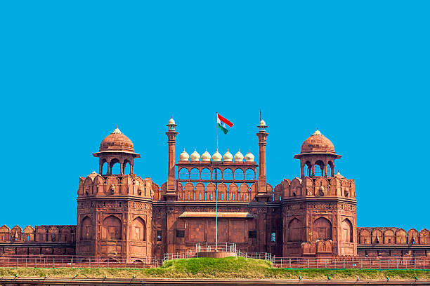
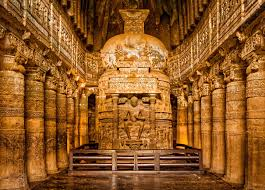

The Taj Mahal, an ivory-white marble mausoleum in Agra, India, is a UNESCO World Heritage site built by Mughal Emperor Shah Jahan for his beloved wife Mumtaz Mahal, symbolizing eternal love and representing the pinnacle of Mughal architecture. Commissioned in 1632 and completed around 1653, this stunning complex features symmetrical gardens, a mosque, a guesthouse, and intricate marble inlay work (Pietra Dura) with semi-precious stones, making it a globally admired masterpiece and a major tourist attraction. Key Facts:-
Location: Agra, Uttar Pradesh, India, on the banks of the Yamuna River.
Built By: Mughal Emperor Shah Jahan.
For Whom: His favorite wife, Mumtaz Mahal, and later his own tomb.
Construction: 1631-1648 (mausoleum); complex finished by 1653.
Architectural Style: Indo-Islamic, known for symmetry, balance, and intricate details.
Material: Ivory-white marble with precious and semi-precious stone inlay (Pietra Dura).
UNESCO Status: Designated a World Heritage Site in 1983.
Symbolism: A universal symbol of love, purity, and spiritual harmony. Architectural Highlights:-
Main Mausoleum: A large, domed structure with four minarets.
Complex: Includes a mosque (west), guesthouse (east), formal gardens, and a wall.
Symmetry: Nearly perfect symmetry across the complex, with red sandstone buildings balancing the white marble mausoleum.
Artistry: Exquisite floral and geometric patterns crafted with inlaid stones like jade, jasper, and lapis lazuli.
Acoustics: The interior creates a unique 28-second echo, enhancing the spiritual atmosphere. Significance:-
Considered the "jewel of Muslim art in India" and one of the world's most admired masterpieces.
Represents the wealth, power, and artistic finesse of the Mughal era.
Attracts millions of visitors annually, celebrating India's rich history and culture.
We are a company dedicated to providing excellent service.
RED FORT

The Red Fort (Lal Qila) in Old Delhi, a UNESCO World Heritage Site, is a massive red sandstone fortress built by Mughal Emperor Shah Jahan (1639-1648) as his palace, showcasing stunning Indo-Islamic architecture with palaces, halls (like Diwan-i-Aam, Diwan-i-Khas), gardens, and canals, serving as a symbol of Mughal power and India's history, where the Prime Minister hoists the national flag on Independence Day. Key Facts:-
Builder: Emperor Shah Jahan.
Location: Old Delhi, India, on the Yamuna River.
Built: 1639-1648 (took about 10 years).
Architecture: Blends Islamic, Persian, Timurid, and Hindu styles; famous for red sandstone walls.
Design: Irregular octagon with two main gates (Lahori Gate, Delhi Gate).
UNESCO Status: Declared a World Heritage Site. Major Structures & Features:-
Diwan-i-Aam (Hall of Public Audience): For public gatherings.
Diwan-i-Khas (Hall of Private Audience): For private court.
Rang Mahal (Palace of Colors): Part of the royal women's quarters (Zenana).
Nahr-i-Bihisht (Stream of Paradise): An artificial stream bringing water through the palaces.
Jami Masjid (Great Mosque): A prominent mosque within the complex. Historical Significance:-
Served as the main residence for Mughal Emperors for over 200 years.
Witnessed the end of Mughal rule and British occupation, during which many internal structures were demolished.
Became a symbol of independent India; the first Prime Minister, Jawaharlal Nehru, hoisted the flag here on August 15, 1947.
The Indian Prime Minister still hoists the flag from its ramparts annually on Independence Day. Visiting Information:-
Hours: Generally 9:30 AM to 4:30 PM, closed Mondays.
Accessibility: Relatively accessible with ramps for wheelchairs in many areas.
AJANTA CAVES

The Ajanta Caves are a stunning collection of ~30 rock-cut Buddhist caves in Maharashtra, India, famous for masterpieces of ancient Indian art, particularly vibrant murals depicting Jataka tales (Buddha's past lives) and sculptures, created between the 2nd century BCE and 6th century CE, functioning as monasteries and worship halls, rediscovered in 1819, and designated a UNESCO World Heritage site in 1983. They showcase incredible Buddhist architecture, painting, and socio-cultural history, revealing evolution from Hinayana to Mahayana Buddhism. Key Features:-
Art & Architecture: Masterpieces of ancient Indian art, featuring elaborate paintings (frescoes) and rock-cut sculptures.
Subject Matter: Paintings illustrate Jataka tales, the life of Buddha, and Buddhist deities, demonstrating advanced realism and perspective using natural pigments.
Purpose: Served as monasteries (viharas) and prayer halls (chaityas) for Buddhist monks.
Construction: Carved into cliffs in a horseshoe shape, evolving in two phases, with the second phase showing highly developed artistry. History & Discovery:-
Creation: Excavated over centuries, with construction beginning around the 2nd century BCE and continuing until the 6th century CE.
Rediscovery: Lost for centuries, they were famously rediscovered by British soldiers in 1819.
Significance: Considered a vital source for understanding ancient Indian history, Buddhist faith, and artistic development, influencing later art in India and beyond. Visiting Information (General):-
Location: Near Aurangabad, Maharashtra, India.
Status: A protected UNESCO World Heritage Site.
Closure: Typically closed on Mondays.